Ag Úsáid an Chliaint
Ritheann cliant deisce Nextcloud sa chúlra. Oscail a chuid socruithe ón tráidire córais ar Windows agus Linux, nó ón mbarra roghchláir ar macOS.
Cuir cuntas leis
Chun cuntas Nextcloud eile a nascadh, oscail an dialóg socruithe agus cliceáil ar Cuir cuntas leis sa bharra taoibh. Cuir isteach an seoladh a úsáideann tú chun rochtain a fháil ar do fhfreastalaí Nextcloud i mbrabhsálaí, agus ansin cliceáil ar Logáil isteach.

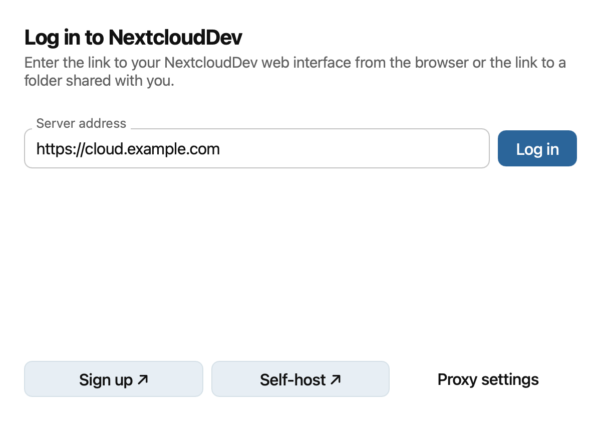
Más gá seachfhreastalaí do do líonra, cliceáil Socruithe seachfhreastalaí sula logálann tú isteach. Roghnaigh seachfhreastalaí an chórais nó cuir isteach do shocruithe seachfhreastalaí de láimh, ansin cliceáil Críochnaithe.

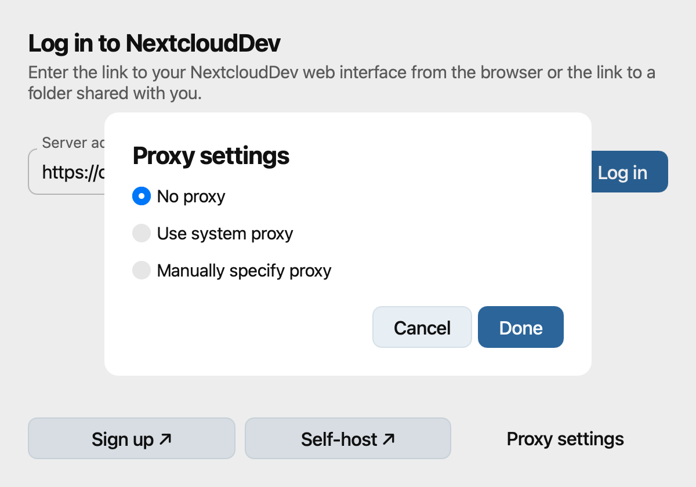
Má theipeann ar an nasc slán, seiceáil seoladh an fhreastalaí agus déan teagmháil le riarthóir an fhreastalaí. D’fhéadfadh an draoi a mholadh nasc a bhunú gan TLS nó deimhniú cliant a úsáid. Ná roghnaigh Úsáid deimhniú cliant ach amháin má éilíonn do fhreastalaí ceann.

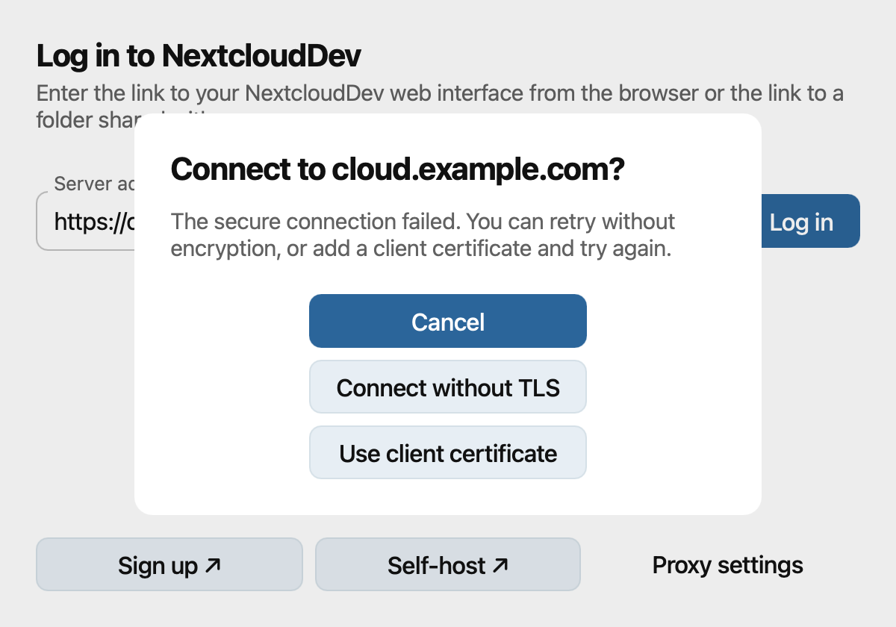
Má iarrtar ort teastas cliant a sholáthar, roghnaigh an comhad PKCS#12 a chuir do riarthóir ar fáil, cuir isteach an focal faire a bhaineann leis, agus cliceáil Ceangail.

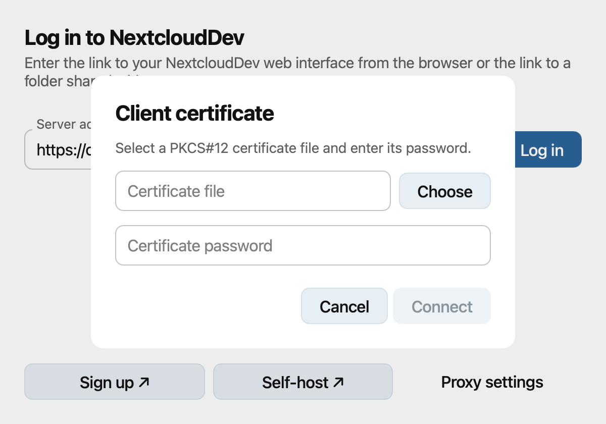
Iarrann an draoi ort aistriú chuig do bhrabhsálaí. Cliceáil Oscail mura n-osclaíonn an brabhsálaí go huathoibríoch. Logáil isteach agus tabhair rochtain don chliant deisce nuair a iarrtar ort é sin a dhéanamh. Ansin, fill ar an draoi.

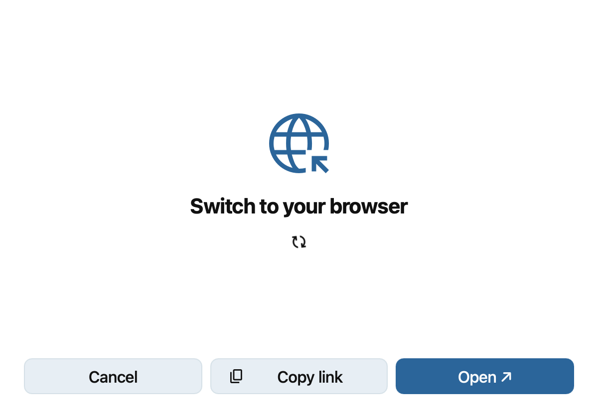
Roghnaigh an chaoi chun do chuid comhad a shioncronú. Sa tsioncronú clasaiceach, roghnaigh Sioncronaigh gach rud nó Roghnaigh cad ba cheart a shioncronú. Úsáid Roghnaigh in aice le Fillteán sioncronaithe áitiúil chun an áit a stóráiltear comhaid a athrú, agus ansin cliceáil Déanta.

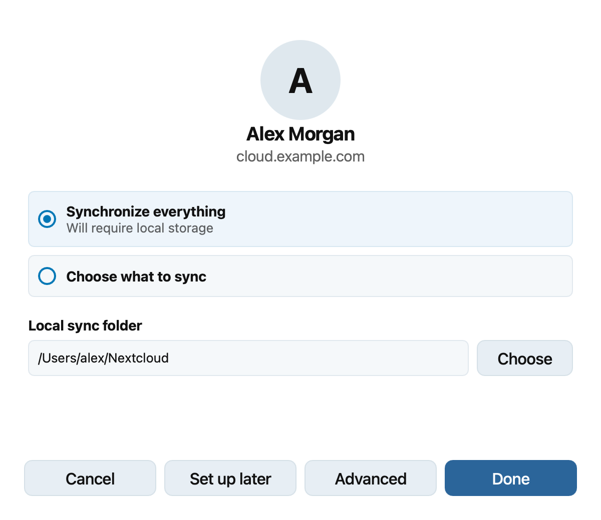
Is féidir leat Soláthraí Comhad (File Provider) a roghnú chun comhaid a íoslódáil de réir mar a bhíonn gá leo. Cliceáil Déanta chun an cuntas a chur leis. Ar macOS, féach Using the macOS File Provider le haghaidh sonraí faoin gcomhtháthú le Finder.

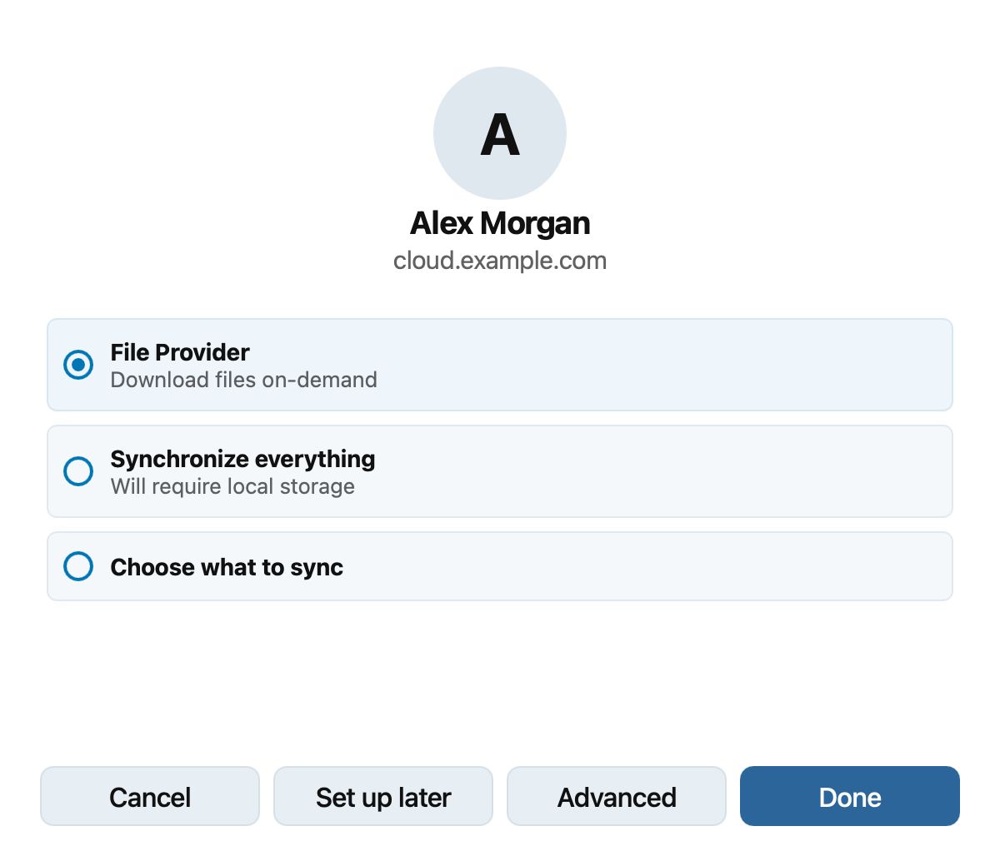
Sula gcríochnaíonn tú an sioncronú clasaiceach, cliceáil Ardroghanna más mian leat deimhniú a fháil sula ndéantar fillteáin mhóra nó stóráil sheachtrach a shioncronú. Socraigh do roghanna in Ardroghanna, ansin cliceáil Déanta chun filleadh ar an draoi.

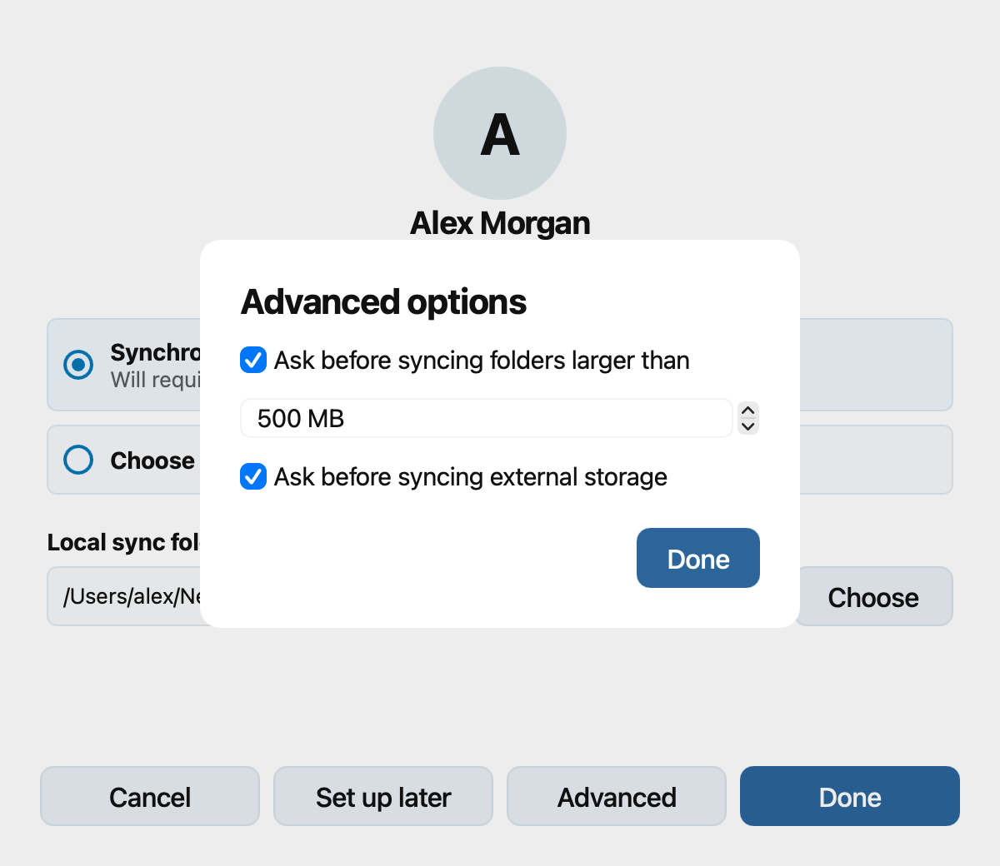
Dialóg socruithe
Roghnaigh cuntas sa bharra taoibh chun stádas sioncronaithe, fillteán áitiúil, úsáid stórála, agus socruithe ceangail an chuntais sin a fheiceáil. Úsáid Cuir Ceangal Sioncronaithe Fillteáin leis chun fillteán sioncronaithe clasaiceach eile a shocrú don chuntas sin. Is féidir leat logáil amach nó an cuntas a bhaint ón leathanach céanna.

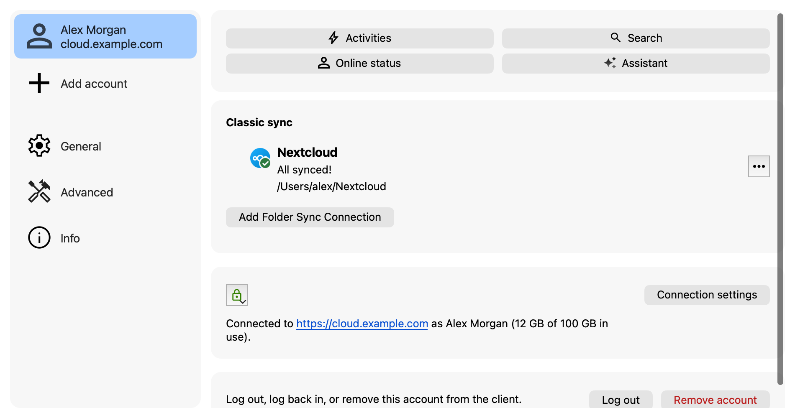
Faoi Ginearálta, roghnaigh cé acu an seolfar an cliant ag am tosaithe, an n-úsáidfear deilbhíní monacrómacha, agus an dtaispeánfar fógraí. Ar macOS, is féidir leat 'Soláthraí Comhad' (File Provider) a chumasú do gach cuntas freisin. Cuireann an socrú seo in áit na seanfhillteán sioncronaithe agus an chomhtháthaithe atá acu le Finder.

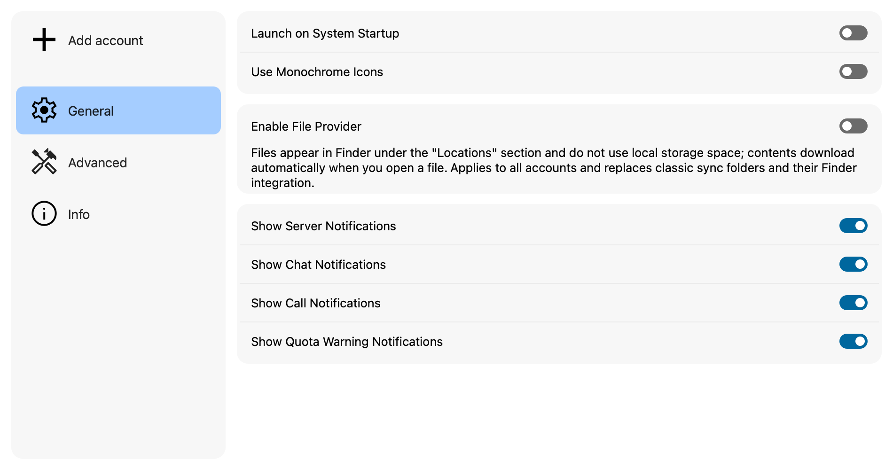
Faoi Ardroghanna, socraigh tairseacha deimhnithe le haghaidh fillteán mór agus stóráil sheachtrach. Is féidir leat freisin an t-eatramh vótála freastalaí a choigeartú, a chinneadh an rachaidh comhaid a scriostar chuig an mbruscar, comhaid a ndéantar neamhaird díobh a chur in eagar, nó cartlann dífhabhtaithe a chruthú.

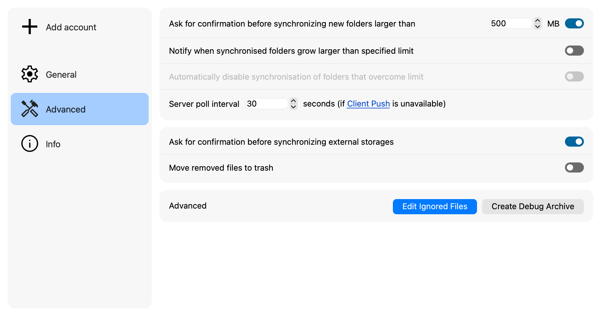
Chun comhaid nó fillteáin a eisiamh ó shioncrónú, cliceáil Cuir Comhaid Neamhaird in Eagar faoi Ardleibhéil. Cuir patrún leis do gach mír ar mhaith leat neamhaird a dhéanamh orthu. Comhfhreagraíonn réalta (*) d'aon líon carachtar, comhfhreagraíonn comhartha ceiste (?) d'aon charachtar amháin, agus cuireann slais deiridh (/) teorainn le patrún do fhillteáin. Roghnaigh Ceadaigh Scriosadh ach amháin le haghaidh míreanna neamhairdithe a d'fhéadfadh an cliant a bhaint nuair a chuireann siad cosc ar fhillteán a scriosadh. Cliceáil Ceart go leor le sábháil.

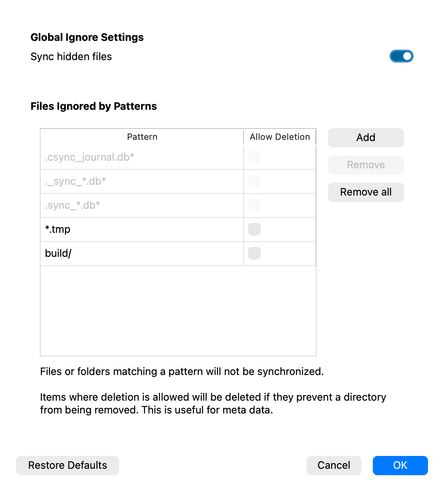
Faoin rannán Eolas, is féidir leat leagan an chliaint deisce a sheiceáil agus an doiciméadúchán úsáide nó an fógra dlíthiúil a oscailt.

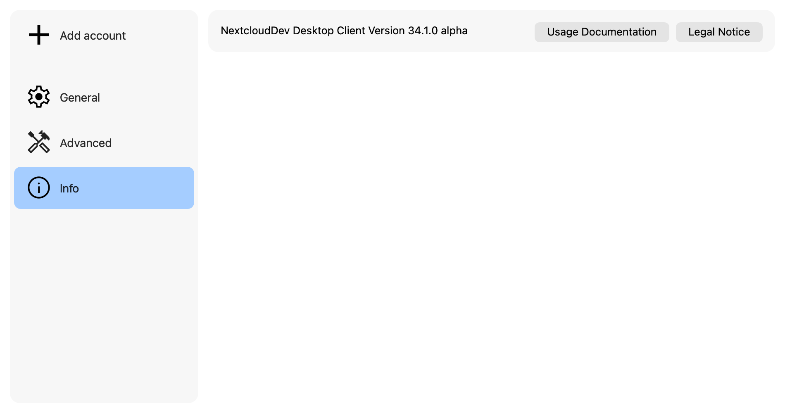
Deilbhín an tráidire córais
Taispeánann an cliant deisce deilbhín stádais sa tráidire córais ar Windows agus Linux, nó sa bharra roghchláir ar macOS. Tá deilbhíní stádais ildaite, chomh maith le deilbhíní tráidire atá ildaite nó monacrómach, ar fáil do na staideanna sioncronaithe céanna. Is féidir leat deilbhíní monacrómacha a roghnú faoi Ginearálta sa dialóg socruithe.
Stát |
Stádas |
Tráidire aonair |
Tráidire dathanna |
|---|---|---|---|
Cothrom le dáta agus ceangailte |
|||
Ag sioncronú |
|||
Curtha ar sos |
|||
As líne |
|||
Rabhadh; oscail an cliant chun tuilleadh sonraí a fháil |
|||
Earráid; oscail an cliant chun sonraí a fháil |


Oscail an deilbhín sa tráidire nó sa bharra roghchláir chun an cliant agus na gníomhartha atá ar fáil dó a fheiceáil, mar shampla an sioncronú a chur ar sos nó a atosú.
Deilbhíní forleagtha i mbainisteoir comhad
I gcás fillteán sioncronaithe clasaiceacha, cuireann an cliant deisce deilbhíní forleagtha le comhaid sa bhainisteoir comhad. Ciallaíonn tic glas go bhfuil comhad cothrom le dáta. D’fhéadfadh sé a chiallaíonn deilbhín rabhaidh go ndearnadh neamhaird de chomhad; léiríonn X dearg earráid sioncronaithe. Léiríonn deilbhín gorm go bhfuil comhad ag fanacht le sioncronú nó á shioncronú faoi láthair. Nuair nach bhfuil an cliant ceangailte leis an líonra, ní thaispeánann sé deilbhíní forleagtha a léiríonn staid reatha sioncronaithe an fhillteáin.
Léiríonn forleagan fillteáin earráidí sioncronaithe a bhaineann lena bhfuil ann. Ní athraíonn comhaid a ndearnadh neamhaird díobh stádas an fhillteáin ina bhfuil siad. Ar macOS, úsáideann File Provider na táscairí stádais caighdeánacha de chuid Finder, mar a thuairiscítear in Using the macOS File Provider.